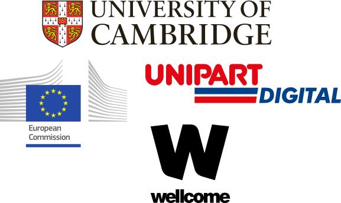

I am privileged to have had the support of many organizations until now. The initiatives put forward by the European Commission, in particular, were instrumental in fueling my development as a person and as a professional. Europe taught me about diversity, culture, peace, respect and tolerance. It dissolved any border that stood in the way between me and my goals.
I would also like to thank the University of Cambridge and the Wellcome Trust for supporting my research as a Ph.D. student. Last but not least, I thank Unipart Digital for giving me a job that I love. It is a such great place to work and a deep source of inspiration.
